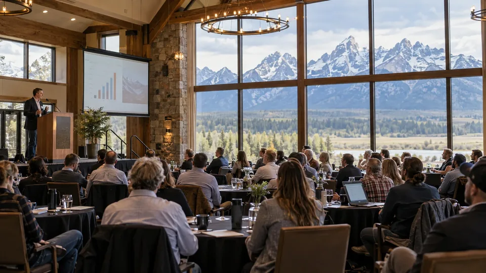

Why Markets Listen to Jackson Hole Speeches
The Kansas City Fed's symposium is a forum for research and policy communication. A speech can change expectations without changing the policy rate.

A speech can move financial markets without containing a policy decision. If it changes how investors expect a central bank to respond to future data, prices can adjust before any rate is changed.
The Federal Reserve Bank of Kansas City hosts the Jackson Hole Economic Policy Symposium. Researchers, policymakers and other participants discuss an annual theme. The gathering is not an FOMC meeting and does not itself set the US policy rate.
Markets may pay particular attention to senior central-bank speakers because their remarks can clarify priorities or the assessment of risks. The information value depends on what differs from previous communication, rather than on the location or prominence of the event alone.
A conditional statement should remain conditional in coverage. Describing what would justify a future policy response is different from promising that response. Prepared remarks and the full context are stronger evidence than a sentence detached from its qualifications.
Price changes can reflect positioning and other news arriving at the same time. A market move after a speech does not prove that every participant drew the same conclusion or that the speaker intended that precise result.
Compare the remarks with earlier statements and subsequent official decisions. The symposium's relevance comes from the ideas and information conveyed, not an assumption that every year's gathering must announce a turning point.
Sources and methodology (2)
Primary references for the definitions, methods and risks discussed above. Examples labeled hypothetical or illustrative are not current market quotations.
TTN analysis for informational purposes. This article is not investment, tax or legal advice.